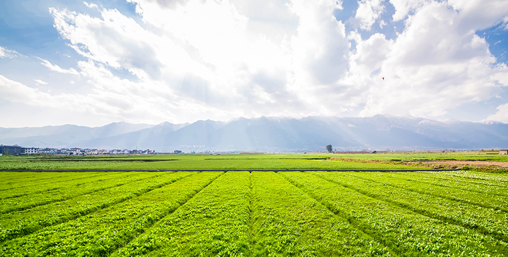
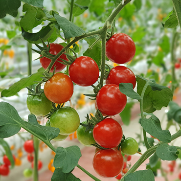
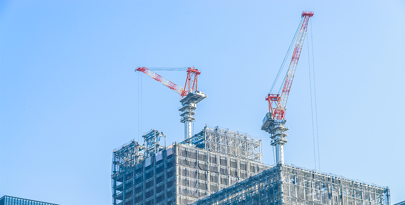
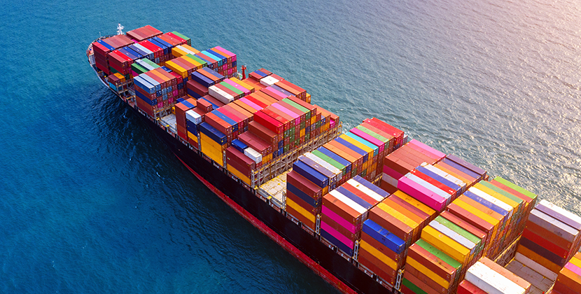

home> 사업분야> 사업부문
사업부문
“KG 케미칼은 최고의 회사로 성장하기 위해 노력하고 있습니다.”
1954년 국내 최초의 민간 비료회사로 출발한 KG케미칼의 사업을 소개합니다.
생명농업사업
- KG케미칼은 대한민국의 대표 비료 선도기업입니다.
- 앞으로도 친환경 비료 개발에 앞장서는 기업이 되겠습니다.
- KG케미칼의 비료사업부문은 농업인에게 고품질의 비료를 합리적인 가격으로 공급하고 있습니다.
- 더불어 토양과 작물에 알맞은 무기질 · 유기질비료, 친환경생물제재를 생산하여 건강한 농산물의 수확과 지속 가능한 농업발전에 앞장서고 있습니다.
- 비료생산 60년 기술력을 바탕으로 신제품 개발 · 품질향상을 위한 투자를 아끼지 않으며 고객의 목소리에 귀기울이는 기업이 되겠습니다.
-
- 다양한 농사 정보
- 친환경 비료 개발에 앞장서는 KG케미칼은 블로그를 통하여 다양한 농사정보 등을 공유하고있습니다 앞으로도 친환경 비료 사업에 앞장서는 KG케미칼이 되겠습니다.
-

- 팜몰
- KG케미칼의 비료사업부문은 농업인에게 고품질의 비료를 합리적인 가격으로 공급하고 있습니다. 더불어 토양과 작물에 알맞은 무기질 · 유기질비료, 친환경생물제재를 생산하여 건강한 농산물의 수확과 지속 가능한 농업발전에 앞장서고 있습니다.
건설소재분야
- 감수제, 유지제, 혼화제, 분산제 등 다양한 화학소재를 통해 더 나은 미래에 기여합니다.
- KG 케미칼은 1993년 국내 최초로 PNS 계열의 고성능 감수제인 Powercon을 시장에 선보였습니다.
- 대한민국의 건축, 토목 기술 발전에 촉매 역할을 한 Powercon을 필두로 PC계열의 Powerflow를 개발하여,
- 국내 건설 관련 소재산업의 발전을 선도해 왔습니다. 건설소재 외에도 다양한 형태의 분산제를 개발하여 후방산업의
- 발전에도 기여해 왔습니다. 당사가 생산, 공급하는 나프탈렌계 분산제는 염료 뿐만 아니라
- 고무, 라텍스 등 다양한 후방산업에 쓰이면서 대한민국 산업 경쟁력 향상에 기여하고 있습니다.
- KG 케미칼은 우리 제품이 인류 삶의 질을 개선시킨다는 사명의식을 가지고 '지구사랑 사람사랑'을 실천해 나가겠습니다.
항만물류사업
- 최고의 항만물류서비스로 '고객만족'을 실현하고자 합니다.
- KG의 항만물류(HARBOR LOGISTICS)사업부는 울산의 온산항에서 선도적인 역할을 하고있는 전문하역회사로 자가부두 및 기계화 하역시설을 완비하여 보다 저렴한 가격으로 신속 정확한 하역, 보관, 운송에 이르기까지 일괄서비스로 고객만족을 실현하고 있습니다. 또한 최대의 효율로 최고의 서비스를 제공하기위해 항만물류사업부는 고객만족을 목표로 고객과 함께 합니다. 향후에는 수입상품 판매, 유류사업, 골재판매 등으로 사업영역을 확대하여 항만물류종합회사로 도약할 것 입니다. (접안능력: 40,000 DWT 1선좌, 보유장비: UNLOADER 600톤/H 1기)
신사업
- 대한민국 KG를 세계속의 KG로, KG 친환경제품을 세계인의 삶속으로.
- 신사업부문은 농업, 건설소재, 환경, 정밀화학, 신소재 등의 전 사업분야에서 50여년에 걸쳐 축적된 경험과 친환경제품을 지구 곳곳으로 전파하여 전세계인의 삶을 풍요롭게 하고 지구의 환경을 보전함으로써 글로벌 미래가치를 창조해 나가고 있습니다. 10년 그리고 100년 뒤를 생각하며 새로운 성장동력을 만들고 있습니다. 대한민국의 경제발전의 원천이 될 KG의 미래 성장동력을 발굴하고 발전시키고 있습니다. 사업다각화를 위한 신규사업의 인큐베이팅에서 복합트레이딩 업무까지 담당하며 지구와 사람, 그리고 KG의 새로운 길을 만들어가고 있습니다.